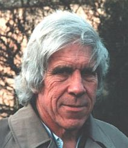
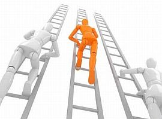

Rina rezaba por la niña aunque no la conocía. Doblada ante sus ídolos, disponía de su tiempo para pedir a seres invisibles que la salvaran. Una cadena de oración se había desatado por las redes sociales y todos decían orar por ella y su recuperación; de hecho, una devota afirmaba que el que no rezaba no era lo suficientemente altruista. Pero ni la niña era real, era otro de esos cuentos de troles que llevan años en internet, ni la señora tenía idea de los distintos significados que son manejados respecto al altruismo. ¿Quién se benefició con el rezo y para quién fue costoso? ¿Es posible considerar la conducta creyente como un fenómeno altruista?
Bueno, iniciemos este camino hacia el altruismo con aquel espeluznante video de Yue Yue. La niñita china murió luego de ser atropellada por dos vehículos e ignorada por 18 transeúntes que pasaron frente a su ensangrentado cuerpo y la ignoraron; de hecho, si alguno de ellos la hubiese ayudado, es posible que la pequeñita hubiese sobrevivido. Ciertamente, aquel terrible video originó todo un debate en China sobre el trato al buen samaritano. Un incidente en el 2006 fue recordado donde una persona tuvo que pagar por salvar a una mujer; por eso, decían, no es beneficioso castigar al buen samaritano pues a la gente le salen callos fácilmente. Aún así, no buscar ayuda para una niñita pequeña que ha sido atropellada es realmente inadmisible y no se justifica con esa ni ninguna otra conjetura. Los hechos nos muestran personas sin chispa alguna de altruismo y empatía. ¿Cómo puedes justificar ignorar el cuerpo herido de una niñita pequeña en medio del camino?, y ¿cómo enlazas esta actitud frente a los que rezan a nada por nadie?
Ayudar a otros en base a nuestro sacrificio es altruismo. Es posible distinguir el fenómeno en otros animales y es más popular mientras más cercanos se encuentren, es decir, el altruismo hacia tus familiares será mucho más intenso que el altruismo hacia un desconocido. Los investigadores explican que tiene más sentido sacrificar un poco de tus opciones para reproducir si ese sacrificio permitirá que personas de tu parentesco lo hagan. Se habla mucho de ello cuando se describen especies cuyo altruismo inicia en la misma forma en que se reproducen. Es a lo que se ha llamado altruismo fenotípico que tiene un costo para el individuo pero es también genéticamente egoísta porque beneficia sus genes. Un fenómeno explicable por la selección natural.

“Los beneficios de la reciprocidad dependen en la proporción desigual de costo-beneficio del acto altruista, es decir, que el beneficio del acto altruista para el que lo recibe sea mayor que el costo del acto del que lo hace. La relación costo-beneficio la podemos definir como el aumento o la reducción en las oportunidades de que alelos relevantes se propaguen en la población”, escribe el evolucionista Robert L. Trivers.

Y escuchamos hablar de los alelos en el altruismo biológico y cómo, dependiendo de la cantidad de estos diminutos hilos en los cromosomas, los genes resuelven la identidad sexual del animal, si va a ser estéril o no, si su función será reproducir. Se utiliza mucho la matemáticas en la biología evolutiva y se hacen fórmulas que incluyan el costo y el beneficio de un individuo para estimar su grado de altruismo y egoísmo. La evolución grupal, el altruismo familiar, el recíproco y la subversión desde dentro son algunos de los elementos que entran en estas complicadas notas. Al final, como dice el biólogo Richard Dawkins, puedes tener un grupo conformado por altruistas y sólo toma un egoísta, un oportunista o vividor para echarlo todo a perder.
No obstante, el altruismo sobrevive en la naturaleza porque deja sus beneficios. En sus diversas plataformas de existencia, ya sea acomodando alelos para definir la función o siguiendo las reglas del grupo para mejorar la posición de su familia y la del individuo también. Si existe una ventana abierta para que haya altruismo es porque su presencia beneficia a los grupos, ya sea a través del altruismo entre familia o durante la cooperación mutua entre individuos de diferentes grupos.
“Muchas veces se habla de cooperación y mutualismo. En estas circunstancias, un individuo no sólo aporta beneficios sino que los recibe; no significa el mismo sacrificio del altruismo, aunque algunos lo usen de sinónimo, y no necesita tampoco explicaciones sobre algún cambio en la capacidad reproductiva del que realiza el acto porque el beneficio los incluye a ambos. Algunos le llaman beneficio mutuo otros sugieren los resultados del beneficio”, explica el biólogo Samir Okasha en su ensayo Altruismo biológico.
Este altruismo biológico básico, anclado en el sacrificio puro para el beneficio de otro, se basa en la simple idea de la selección de parentesco. La familia es el filtro y sólo individuos con genomas similares a los nuestros lo atraviesan; no vamos a ser altruistas con todo el mundo porque así el ‘gen altruista’ 1 no sobreviviría, sólo el egoísta lo haría. Pero al limitar la conducta a personas con las mismas unidades genéticas las probabilidad a favor del grupo completo son mucho mayores.
“Esto quiere decir que el gen altruista, en principio, puede expandirse a través de la selección natural. El gen hace que un organismo se comporte de forma tal que reduzca su capacidad reproductiva pero que aumenta esta capacidad en sus familiares, los cuales tienen un promedio mayor de también llevar el gen. Así, el efecto general de la conducta será aumentar el número de copias del gen altruista en la próxima generación y por eso, la incidencia de la conducta altruista”, cuenta Okasha.
La idea ha estado presente desde 1930 cuando fue argumentada por J.B.S. Haldane y luego expandida y cimentada por William Hamilton en 1964 cuando promulgó su conocida regla: un gen altruista será favorecido por la selección natural cuando se da una relación genealógica entre el donante y el recipiente. Así, de acuerdo al tipo de especie, las fórmulas de los evolucionistas agregan mayor probabilidad de que se copie el gen si la conducta es dirigida a un familiar cercano.
“Es la peculiaridad que vemos en el sistema genético conocido como haplodiploidía donde el promedio femenino comparte más genes con sus hermanas que con sus crías. De esta forma, la hembra tendrá más oportunidades de copiar sus genes a la próxima generación si ayuda a que la reina se reproduzca, lo que a su vez aumenta el número de hermanas que tendrá, en vez de tener sus propios hijos. La teoría de la selección de parentesco provee con una explicación precisa sobre cómo la esterilidad en los insectos sociales pudo haber evolucionado a través del proceso Darwiniano”, ofrece Hamilton.
Por supuesto, es una teoría controversial, especialmente el tema de lo significativo que representa la evolución sexual de los insectos y la esterilidad. Como dije antes, la teoría es presentada a través de fórmulas que miden el costo y la energía de un individuo que elabora una conducta altruista y cómo sus resultados no sólo aumentan las copias de los genes de su grupo, sus familiares, sino que aumentan su capacidad inclusiva que es representada como su capacidad personal sumada al aumento de su efecto en los demás. En otras palabras, puede que hayas reducido tu potencial de reproducción individual, pero los beneficios del grupo también te incluyen en otras variables.
“En vez de pensar en términos de que genes egoístas tratan de maximizar su representación futura en la piscina genética, podemos pensar en términos de individuos que maximizan su capacidad inclusiva entre individuos en la población”, explica Okasha. “La mayoría de las personas piensa que verlo desde el punto de vista de los genes, en vez del individuo, es mucho más simple, más sencillo de explicar, sin embargo, matemáticamente ambos son realmente lo mismo”.
Ahora bien, si esto iba a ocurrir, la naturaleza también garantizaría un mayor reconocimiento entre animales parientes; elementos debían sugerirte que esa persona es tu familiar ¿o no?, ¿cómo saberlo si no te lo dicen?
Pues bien, estudios diversos aseguran que la selección por parentesco no necesariamente necesita que se haga esta diferencia, más aún, no es la única posibilidad. De hecho, los animales se identifican por el sistema olfativo, no obstante, aún no tuvieran cómo hacerlo, nos dicen los evolucionistas, tenemos los indicadores de aproximación. Aquí en la Lupa hemos hablado, por ejemplo, de la impronta, un proceso utilizado por los animales para distinguir la madre o esa persona que ven por primera vez antes de nacer. Konrad Lorenz popularizó el término y el fenómeno con unos gansos que lo siguieron luego de nacer. Para algunos sociobiólogos, esta conducta puede ser determinista y estar controlada por los genes, pero la mayoría de los evolucionistas piensa que el parentesco no está precisamente determinado genéticamente sino que los genes aumentan las probabilidades de que el organismo se comporte de cierta forma con quien lo recibe.
Pero es una conducta difícil. De hecho, algunos rechazan la selección de parentesco como la explicación fundamental de altruismo ya que al final, se basa en el egoísmo de los genes para maximizar su expansión y no es ‘puro’ altruismo.

“Si por altruismo real hablamos de una intención consciente para ayudar, entonces las criaturas vivientes no son capaces de altruismo real ni tampoco de egoísmo real. Las hormigas y las termitas, por ejemplo, presumiblemente no tienen intenciones conscientes, por lo tanto, su conducta no puede realizarse con la intención de promover su propio interés ni los intereses de los demás. Por eso, pensar que el altruismo en la naturaleza es sólo aparente tiene poco sentido. El contraste entre el altruismo real y el simple altruismo aparente simplemente no se aplica a la mayoría de las especies animales”, explica Okasha.
Curiosamente, un nuevo estudio elaborado en el Colegio Universitario de Londres, sugiere el mecanismo que usamos para ver el parentesco en los rostros. Según el equipo, somos capaces de distinguir a dos familiares gracias a la habilidad del cerebro para captar variaciones estructurales en los rostros de personas con el mismo parentesco. Los investigadores ven, no sólo un nicho en programas computacionales varios con estos experimentos, sino una forma de continuar indagando sobre los procesos que nos ayudan a reconocernos, la percepción entre los sexos y parientes.
La parte biológica del altruismo se conoce profundamente y aunque quedan controversias varias por resolver, la mayoría de los biólogos acepta estos tipos de altruismos nacidos de la necesidad de los genes de copiarse y expandirse. A muchos no les gusta este dominio genético sobre nuestras vidas pero está ahí, es reconocible y se pueden medir sus elementos. Sin embargo, el escenario es más complejo de acuerdo a la especie, y la humana es la reina de la complejidad, especialmente porque las culturas ejercen más influencia en nosotros que en cualquier otro animal. De hecho, tenemos varias ramas que se dedican a estudiar nuestro comportamiento y la forma de pensar. Para estudiar al Homo sapiens hay que tener muchas cosas en cuenta; y el egoísmo y el altruismo son dos grandes estrellas en nuestro intricado comportamiento.
Los humanos y sus culturas
Cuando todo se vuelve más complicado
Contratos, contratos, contratos. Como especie social, nuestro quehacer está repleto de ellos, son una forma de organizar cómo vamos a funcionar, cómo sobreviviremos todos en el creciente grupo. Y formamos contratos para reproducirnos, alimentarnos, trabajar, vivir en pareja y en grupos. Mientras más grandes las sociedades, más contratos formamos; y hemos llegado a un estado donde tenemos personas que se enriquecen con los contratos y sus negocios, con las ansias del ser humano de obtener justicia.
El mundo no es equilibrado. En los segmentos sociales descubrimos un sinnúmero de variables aplicables bajo el contexto básico de la competencia y la cooperación en nuestras acciones.
“Siempre fue muy competitivo, desde niño”, dice un abogado sobre el criminal que asesinó a su esposa a puñaladas y le pegó un tiro al esposo de su amante. “Hacía cualquier cosa por ganar”.
¿Y será eso ganar?
No obstante, el grupo se mueve, a paso lento pero avanza. A pesar de que ideas ignorantes, mediocres y esclavistas retrasan nuestro progreso, el hecho de que existen personas más empáticas que no, es lo que nos mantiene activos, intentando arreglar esta especie adolescente que aún le cuesta pensar, que aún se debate entre su biología, su cultura y lo que se debe hacer.

Por lo general, cuando vemos una conducta que consideramos altruista es posible llevarla a una explicación que satisface algún interés propio del individuo. El altruismo lo observamos en grados y se centra mucho más en el recíproco cuando no es entre familiares. Pero el comportamiento egoísta es capaz hasta de romper los lazos en la familia. Una acción interesada no sólo lleva a la infidelidad y al engaño mismo sino que recorre y envenena los pasillos de otras personas no involucradas directamente. El acto del egoísta puede costarle mucho a distintas personas y beneficiarlo sólo a él. Se ha demostrado que una sola actitud puede cambiar la forma en que ande todo el grupo, la generosidad, por ejemplo, promueve conductas positivas si es repartida entre los individuos.
Y la realidad nos incomoda porque conlleva aprendizaje. Para no ser esclavos de fenómenos biológicos que ya no necesitamos o que se han corrido demasiado hacia “el lado oscuro”, necesitamos aprender. Para liberarnos de tradiciones estúpidas y costumbres irracionales que continúan dañando al planeta, hay que aprender. Y no sólo se necesita obtener información seria sobre los hechos sino que necesitamos aprender a tener tolerancia, a ser más empáticos y a ser altruistas. Puede que a uno les salga más fácil que a otros, pero es necesario arribar a ese punto donde todos decidimos abandonar las malas costumbres para ayudar a los habitantes del planeta.
La persona ya viene propensa a actuar de forma altruista o egoísta (y ambas, por lo general) y se encuentra con experiencias en su camino que pueden promover sus acciones. Las creencias propagan la ayuda al otro asegurando el cielo por ello; de hecho, aceptar a seres invisibles en tu vida como salvadores puede llevarte al reino de los espíritus y hacerte eternamente feliz. Muchos piensan que por eso poseen empatía y gracias a sus dioses se comportan de forma altruista. Pero no es así, las mismas conductas se aprecian en otras especies en distintos grados y, además, los que no creemos también somos empáticos y altruistas.
Los seres humanos desarrollamos un grado de consciencia que nos hace capaz de numerosas acciones y miles de millones de pensamientos distintos. Pero todavía no hemos desarrollado ni la responsabilidad ni la madurez necesaria para explotar exitosamente nuestra capacidad cerebral. Continuamos perdidos en historias falsas, nadamos felices entre conspiranoias, compramos y establecemos fraudes y vivimos a base de puras mentiras; las personas continúan rezando a nada para salvar a nadie y, ante un absurdo así, es difícil el crecimiento, ya que se espera acción por parte del otro.
No sólo la educación puede llevarte a lo racional, la observación curiosa del medio y el sentido común también; hay cientos de maneras de notar el altruismo en la naturaleza; lo que debe ocurrir ahora es que todos concordemos en construir un altruismo basado en el bienestar de todos, que sobrepase las murallas culturales y consiga controlar los impulsos de sus genes; que se concentre en los pasos a dar para que todos podamos estar más o menos bien.
- 1
-
Cuando se habla del “gen altruista” se quiere realmente decir “conductas que son propiciadas o favorecidas por la presencia de ciertas unidades genéticas”. (N. de A.)
Volver al índice de la Lupa Herética
© 2008-2021 Glenys Álvarez y Sin Dioses. Prohibida la reproducción con fines comerciales.
Comentarios
Comments powered by Disqus